Configurações do Cadastro do Item
No cadastro do item são levados em considerações os campos abaixo para realização das recomendações do MRP.
Método de planejamento:
Este parâmetro, localizado na aba ‘Dados de planejamento’, indica se o item será contabilizado nas execuções do MRP.
Ele possui duas opções:
MRP: Indica que o item será planejado e recomendado nas execuções do MRP.
Nenhum: Indica que o item não será planejado e recomendando nas execuções do MRP.
{kind=link}
Método de suprimento
Este parâmetro, localizado na aba ‘Dados de planejamento’, indica a forma que o MRP irá recomendar e suprir o item quando este for processado.
Ele possui duas opções: ‘Comprar’ e ‘Produzir’.
Comprar: Indica que o item será de compra.
Produzir: Indica que o item será de produção.
{kind=link}
Solicitar múltiplos de:
Este parâmetro, localizado na aba ‘Dados de planejamento’ , indica o valor de multiplicidade que o campo ‘Qtd. Solicitada’ do MRP deve seguir.
Caso esteja em branco ou com o valor zero, a quantidade solicitada (através de um documento de compra ou de produção) daquele item não sofrerá mudança.
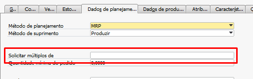{kind=link}
Vejamos um exemplo do funcionamento deste parâmetro: o item Comp01_MRP possui no campo ‘Solicitar múltiplos de’ o valor 1.012 KG:
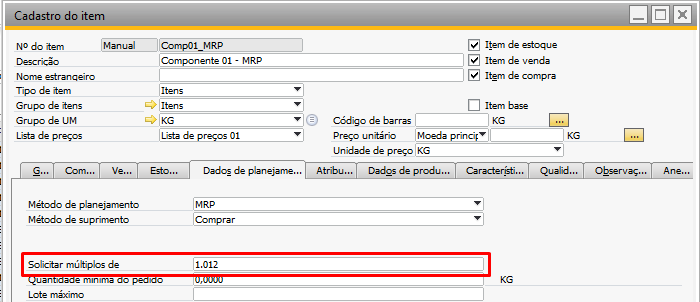{kind=link}
Foi adicionado um ‘Pedido de venda’ para o Comp01_MRP de 3.000 KG:
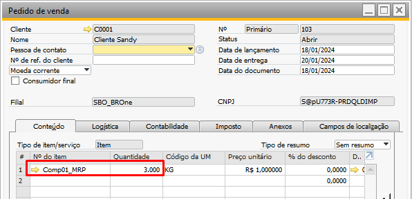{kind=link}
Devido ao parâmetro, o MRP irá recomendar uma quantidade múltipla de 1.012 KG e que atenda a quantidade do ‘Pedido de venda’, ou seja, para o caso acima, a recomendação de compra deverá ser de 3.036 KG:
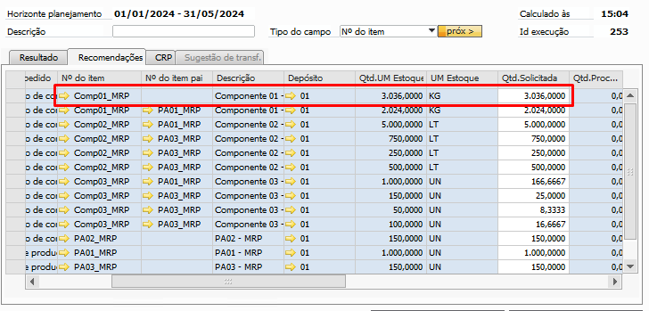{kind=link}
Quantidade mínima do pedido:
Este parâmetro, localizado na aba ‘Dados de planejamento’ , indica o valor mínimo que o MRP irá recomendar para a compra do item.
Vejamos um exemplo do funcionamento deste parâmetro: o item Comp01_MRP possui no campo ‘Quantidade mínima do pedido’ o valor de 3.500 KG:
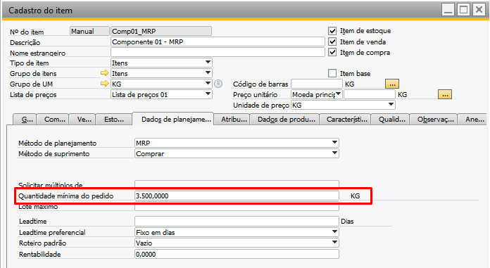{kind=link}
Foi adicionado um Pedido de venda para o Comp01_MRP de 3.000 KG:
{kind=link}
Devido ao parâmetro, o MRP irá recomendar uma quantidade que atenda ao mínimo, isto é, que não seja menor que 3.500 KG:
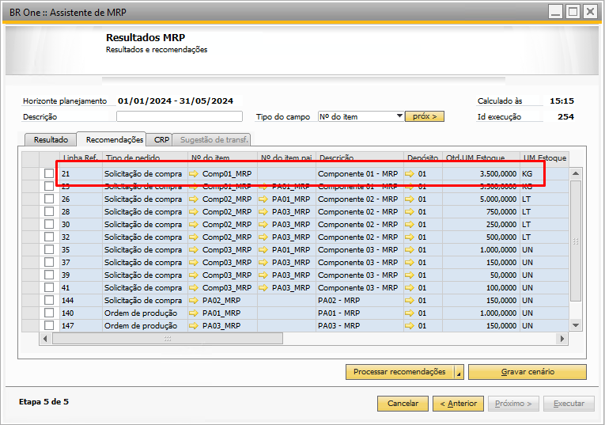{kind=link}
Lote máximo:
Este parâmetro, localizado na aba ‘Dados de planejamento’ fica disponível apenas para itens que possuam o ‘Método de suprimento’ configurado como ‘Comprar’, ele indica qual o valor máximo do lote que um item de compra deverá ter nas recomendações do MRP.
Vejamos um exemplo do funcionamento deste parâmetro: o item Comp01_MRP possui no campo ‘Quantidade mínima do pedido’ o valor de 1.000 KG:
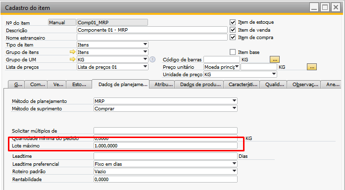{kind=link}
Foi adicionado um Pedido de venda para o Comp01_MRP de 3.000 KG:

Devido ao parâmetro, o MRP irá recomendar a quantidade de 3.000 KG em três linhas de 1.000 KG cada, desde que o parâmetro ‘Lote máximo’ da etapa 4 esteja marcado:
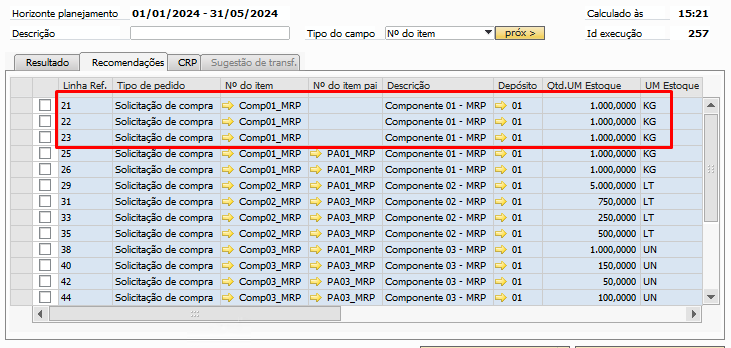{kind=link}
Leadtime:
Este parâmetro, localizado na aba ‘Dados de planejamento’ , indica o tempo em dias úteis que um item de compra leva para ser adquirido e um item de produção leva para ser produzido.
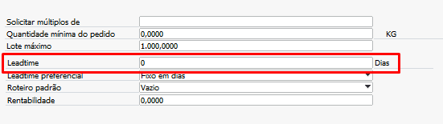{kind=link}
Caso o valor do leadtime estiver em branco ou for zero, será considerado um dia.
Para itens de produção, faz-se necessário que o parâmetro ‘Considerar Lead Time fixo independente do calculado’, localizado nas Configurações de produção, aba ‘MRP’, esteja ativo.
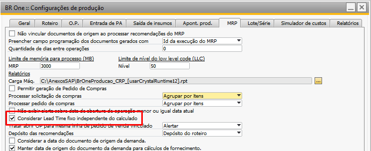{kind=link}
Este parâmetro afeta diretamente a data de liberação recomendada pelo MRP para realizar a entrega do item no prazo estipulado no documento.
Vejamos um exemplo do funcionamento deste parâmetro onde o item Comp01_MRP possui um ‘Leadtime’ de 0 dias e um ‘Pedido de venda’ com entrega para o dia 20/01/2024.
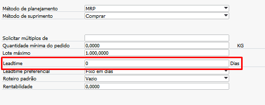{kind=link}
A execução do MRP está ocorrendo no dia 18/01/2024, com isso o resultado será:
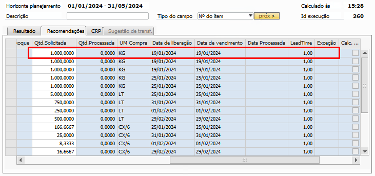{kind=link}
Nota-se que o MRP entende que o leadtime é de 1 dia (dia para entregar), entretanto o prazo para obter o mesmo é zero, com isso, ele recomenda que a data de liberação seja a mesma da data de vencimento, no nosso exemplo dia 19/01/2024.
Vejamos agora um exemplo do funcionamento deste parâmetro com o item Comp01_MRP possuindo um Leadtime’ de 2 dias e um ‘Pedido de venda’ com entrega para o dia 20/01/2024.
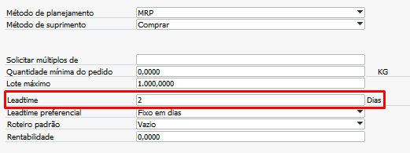{kind=link}
A execução do MRP está ocorrendo no dia 18/01/2024, com isso o resultado será:
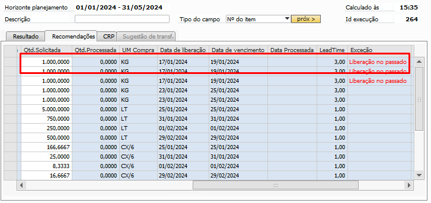{kind=link}
Nota-se que o MRP entende que o leadtime é de 3 dia (1 dia para entregar e 2 dias da configuração), com isso, ele recomenda que a data de liberação seja no dia 17/01/2024, como a execução ocorreu no dia 18/01, ele traz a mensagem de exceção ‘Liberação no passado’, justamente para indicar que a liberação deste documento já deveria ter ocorrido.
Leadtime preferencial:
Este parâmetro, localizado na aba ‘Dados de planejamento’ , indica qual será o tipo do leadtime utilizado preferencialmente para os itens.
No caso dos itens que possuírem método de suprimento comprar, o leadtime preferencial só poderá ter o valor ‘Fixo em dias’.
Já para itens com método de suprimento produzir, poderá ter o valor ‘Fixo em dias’ ou ‘Sequência de operações’.
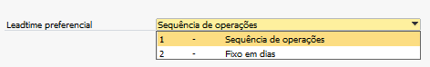{kind=link}
‘Fixo em dias’: utiliza o valor do parâmetro abordado no tópico anterior (Leadtime).
‘Sequência de operações’: faz com que a sequência de operações do roteiro seja levada em consideração para o leadtime, isto é, o cálculo do prazo de produção será feito utilizando o tempo configurado na operação do roteiro do produto acabado.
Vejamos um exemplo do funcionamento deste parâmetro: o produto acabado PA02_MRP possui um roteiro com três operações.
A operação 10 leva 2 horas para finalizar;
A operação 20 leva 1 hora;
A operação 30 leva 30 minutos.
Com isso, as 3 operações totalizam 3 horas e meia para a produção de uma unidade do PA:
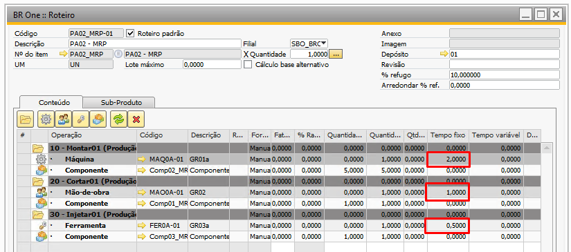{kind=link}
Considerando um calendário de produção de 8 horas, de segunda à sexta e o leadtime preferencial em ‘Sequência de operações’ , a recomendação do MRP para a produção de um PA011 será de um dia:
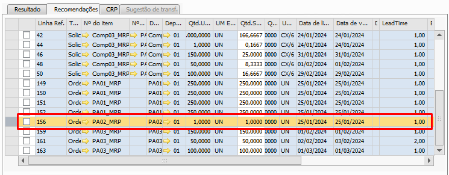{kind=link}
Se modificarmos o roteiro acima para que cada operação leve 8 horas, cada operação levará um dia inteiro de trabalho, logo, a recomendação do MRP terá um leadtime de 3 dias:
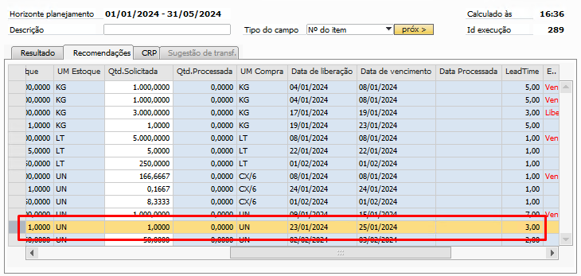{kind=link}
Depósito de componente:
Esta configuração fica disponível apenas para itens de produção que possuam seu Leadtime preferencia igual a ‘Sequência de operações’. É possível escolher entre duas opções:
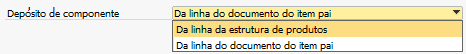{kind=link}
Da linha da estrutura de produtos
Da linha do documento do item pai
Roteiro padrão
Para que os itens de produção (itens com método de suprimento produzir) sejam efetivamente processados pelo MRP, é necessário que o mesmo possua um roteiro padrão cadastrado, do contrário o erro abaixo ocorrerá e a linha processada aparecerá em vermelho:
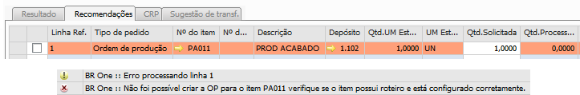{kind=link}
Há dois modos para configurar um roteiro padrão.
O primeiro é através da tela ‘Cadastro do item’, na aba ‘Dados de planejamento’ e no campo ‘Roteiro padrão’:
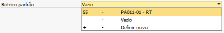{kind=link}
O segundo modo é através da tela do ‘Roteiro’, onde há o flag ‘Roteiro padrão’, que quando marcado, indica que o roteiro em questão deve ser o roteiro padrão do PA:
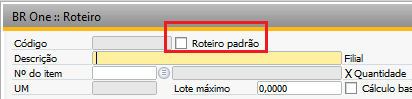{kind=link}
Unidade de medida
Existem três tipos de unidades de medidas, a de Compra, a de Venda e a de Estoque, cada uma configurada individualmente e indicam a medida utilizada nos documentos relacionados.
Nome da UM de Compra:
Este parâmetro, localizado na aba ‘Compra’, é utilizado para saber em qual unidade de compra será realizado o documento de ‘Solicitação de compra’ ou ‘Pedido de compra’, se não estiver preenchido ao gerar o documento, é exibido um erro.
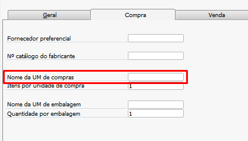{kind=link}
Nome da UM de Venda:
Este parâmetro, localizado na aba ‘Venda’, é utilizado para saber em qual unidade de venda será utilizado nos documentos de saída, exemplo o ‘Pedido de venda’, se não estiver preenchido ao gerar o documento, é exibido um erro.
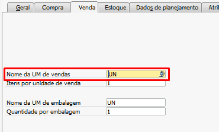{kind=link}
Nome da UM de Estoque:
Este parâmetro, localizado na aba ‘Estoque’, é utilizado para saber em qual unidade de estoque será realizado o documento de ‘Ordem de produção’, se não estiver preenchido ao gerar o documento, é exibido um erro.
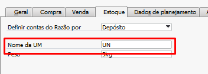{kind=link}
As UMs (Unidades de medidas) são utilizadas no cálculo do MRP, e sua configuração afeta diretamente no resultado das quantidades das sugestões e recomendações realizadas no MRP.